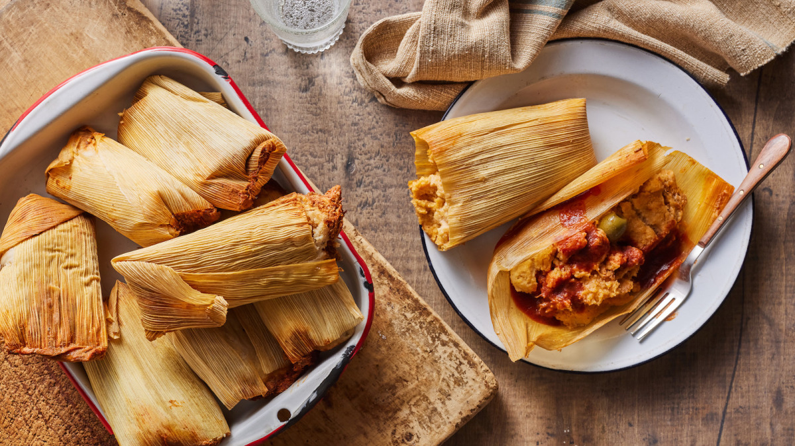

TAMALES

INGREDIENTS
- 2 lbs. masa harina (corn dough)
- 2 cups chicken broth
- 1 cup vegetable shortening or lard
- 1 tsp. baking powder
- 1 tsp. salt
- 1 lb. cooked and shredded meat (such as chicken or pork)
- 1 cup salsa or enchilada sauce
- 30-40 dried corn husks, soaked in warm
water for at least 30 minutes
INSTRUCTIONS
- In a large mixing bowl, combine the masa harina, chicken broth, vegetable shortening or lard, baking powder,
and salt. Mix until the dough comes together and is smooth.
- In a separate bowl, mix the cooked and shredded meat with the salsa or enchilada sauce.
- Drain the corn husks and pat them dry. Spread a thin layer of masa dough onto the center of each husk, leaving
a border around the edges.
- Spoon some of the meat mixture onto the center of the masa dough on each husk.
- Roll up the husks, tucking in the ends to create a neat package.
- Fill a large pot with a steamer basket or metal colander and enough water to reach the bottom of the steamer. Bring the water to a boil.
- Arrange the tamales vertically in the steamer basket, with the open ends facing up.
- Cover the pot with a tight-fitting lid and steam the tamales for about 1 hour and 30 minutes, or until the masa dough is cooked through and firm.
- Let the tamales cool for a few minutes before unwrapping them and serving them hot.